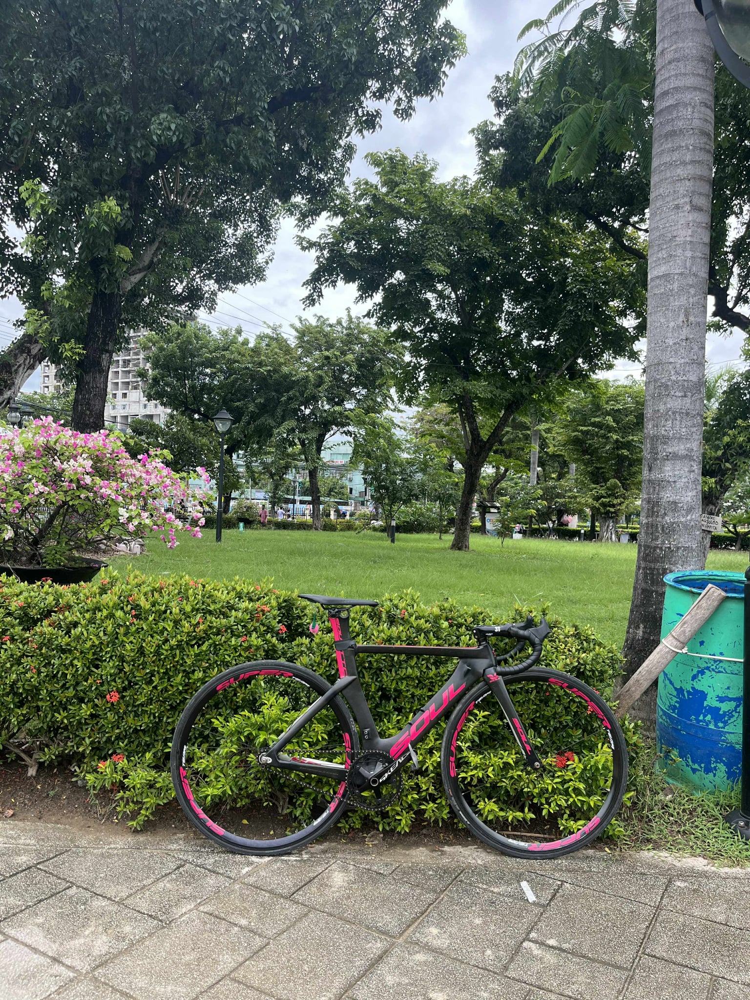

Corey Quijano
I`m from BSIT 1H and a cyclist who loves to travel because of the view cycling is more than just a mode of
transportation or a weekend hobby
it’s a lifestyle, a passion, and a constant reminder of the power of perseverance, freedom, and connection
with the world around us.
Cycling is a wonderful activity because it combines exercise with the enjoyment of being outdoors.
Riding a bike allows me to explore new places, breathe fresh air, and appreciate nature while getting a good
workout.
Unlike being stuck indoors at a gym, cycling gives a sense of freedom and adventure that makes staying
active more fun and motivating.
Another reason why cycling is nice is that it’s a low-impact exercise suitable for people of all ages and
fitness levels.
It’s gentle on the joints while still improving cardiovascular health, muscle strength, and endurance.
This makes cycling an excellent way to stay healthy without putting too much strain on the body.
Cycling also offers a great way to clear the mind and reduce stress. The rhythmic pedaling and steady
movement help me relax and focus, almost like a form of moving meditation.
Whether it’s a quick ride around the neighborhood or a long journey through scenic trails, cycling provides
a mental break from daily worries and a boost in mood.

home
Facebook Account